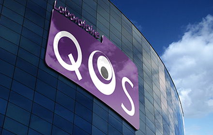

<div class="page about">
    <div class="page-container">
        <div class="president-message">
            <div class="row">
                <div class="col-md-10 col-md-offset-1">
                    <h2><span>Message</span> du Président</h2>
                    <p class="top">En 2014, le bien être visuel ne doit plus être un luxe réservé à une élite mais un droit fondamental pour chacun. Le laboratoire QOSPLUS, à son échelle, mettra tout en œuvre pour que chaque patient ait un équipement de qualité en donnant l’accès pour le plus grand nombre aux différentes avancées technologiques.</p>
                    <p>Une notion de qualité qui va bien au-delà du simple fait de bien voir. Elle comprend la possibilité d’être équipé en bénéficiant du libre choix des montures mais aussi de profiter d’un rapport qualité prix optimal, d’un délai de livraison respecté et d’un SAV irréprochable.</p>
                    <p>L’année 2014-2015 sera pour le laboratoire QOSPLUS une année de développement, avec à titre d’exemple : - Une offre plus étendue avec l’ouverture du département contactologie</p>
                    <p>- Un développement sur tout l’hexagone et à l’étranger<br>
                    - Une politique commerciale innovante<br>
                    - Un outil technologique performant (QOSPLUSWEB)</p>
                    <p>En espérant que le travail effectué par QOSPLUS soit des plus bénéfiques pour tous les acteurs et en premier lieu pour tous pour les patients.</p>
                    <p class="bottom">Cordialement,</p>
                    <div class="signature">
                        <p>René Nakache</p>
                        <p>Président Laboratoire QOS PLUS</p>
                    </div>
                </div>
            </div>
        </div>
        <div class="history">
            <div class="row">
                <div class="col-md-5 col-md-offset-1">
                    
                </div>
                <div class="col-md-5">
                    <h5><span>Notre</span> Histoire</h5>
                    <div class="history-content">
                        <p>
                            <span>C</span>rée en 2008 , le Laboratoire QOS PLUS , avait pour principale vocation de répondre en terme de délai aux urgences des opticiens sur une gamme de verre progressif « le fameux QOS 24 » .
                            6 mois plus tard , nous proposions une des gammes les plus étendues du marché avec le même souci de tenir la promesse de qualité contenue dans le nom du laboratoire , QUALITE OPTIC SERVICE (QOS) .
                        </p>
                        <p>
                            Notre philosophie étant de permettre au plus grand nombre d’avoir accès aux évolutions optiques , nous poursuivons avec la volonté constante d’y parvenir au prix le plus juste .
                        </p>
                    </div>
                </div>
            </div>
        </div>
    </div>
</div>
